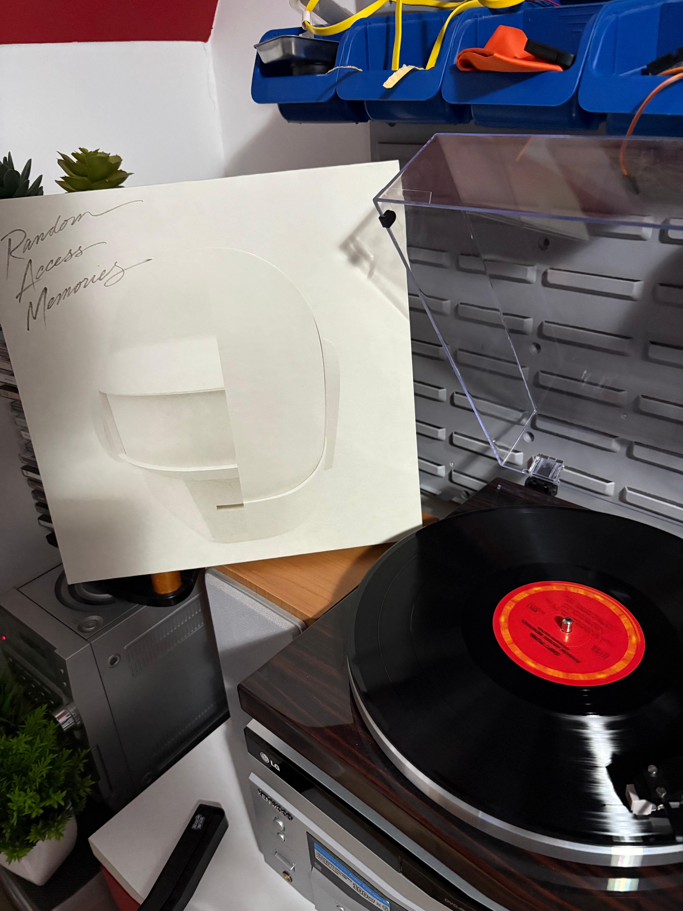

Si, proprio lui
Ora tu dirai ma che c'entra nao... beh si questa foto l'abbiamo scattata il 22 ottobre, il giorno prima di partire per il Maker Faire. Beh si me lo ricordo perchè è la prima volta che siamo rimasti il pomeriggio... non ci rivolgevamo neanche la parola, ma intanto è un inzio no?
La Di Dio nostra santa protettrice
FATE SANTO STO PROGETTO, non mi chiedere dove ho trovato sta foto, ma è bellissima. Mi ricordo il giorno i cui abbiamo iniziato a parlare, che per puro caso siamo rimasti da soli il pomeriggio a lavorare con nao. E quel pranzo al mc, dove abbiamo parlato delle nostre passioni... musica, computer, AMIGA!!!! Insomma poi va afinire che con la scusa fondatissima di mandarti la playlisti ti ho scritto, e le foto di sotto sono i risultati:
Alè catania alè
FOZZA CATANIAAAA. Ok la smetto, qua siamo a novembre, avevi appena fatto il compleanno e il giorno dopo per motivi ancora a me oscuri siamoo andati a catania. Bellissimo, l'inizio di una lunga serie di viaggi per catania e soprattutto il primo di tanti dischi. Eh si dovevo comprarti il regalo di compleanno amore, col disco ci sono andato a colpo sicuro dì la verità. Poi però mentre pagavo, ho visto le rose alla cassa e te le ho volute prendere, chissà magari già mi piacevi? non lo sapremo mai... Ah si PS qua abbiamo fatto la nostra prima foto al cielo la sera! (e nella mia testa quando ti vedevo gia suonava Your Latest Trick)

Ok, penso di essermi innamorato
A siamo a fine novembre, con il diciottesimo di Daniel... minchia quant'eri bella, me la ricordo bene quella sera.. con Matteo che mi chiedeva di te e io rispondevo MHHHHHHHHH. E li non è che mi piacevi, mi piacevi da morire. E siamo a Dicembre! minchia quante ne sono successe a Dicembre: corso, fiera del disco, OPEN DAY!!! Eeeeh si non lo posso negare, al corso ci sono andato solo perchè c'eri tu, vederti alla ricreazione non mi bastava, volevo stare di piu con te, va che belle le nostre due pagine poi amore, e ricordati sempre che IL SOGNO DI UN PISANO E' SVEGLIARSI A MEZZOGIORNO GUARDARE VERSO IL MARE E NON VEDERE PIU LIVORNO!! Cazzate a parte, mi ricordo la nostra prima fiera del disco... e del bordello che ho preso io... Ma arriviamo alla tua parte preferita... GLI OPEN DAY!!! Mamma mia amore, ma quante legnate ci davamo ahaha, chissà che pensavano i ragazzini delle medie... Maa sii alla fine devo ammettere che mi piaceva, anche perchè forse ci siamo avvicinati proprio così. Beh si alla fine dicembre è stato bello: ti ricordi quando ci siamo scambiati il regalo di natale? Mamma mia quanto te lo volevo prendere fleurs, album che ti ho dedicato e che ti dedico ancora, e tu ci hai azzeccato in pieno con RAM Drumless, e l'abbraccio che ci siamoo dati fidati che me lo ricordo ancora amore. La cosa più brutta sono statii 15 giorni di vacanza senza vederti, ma alla fine i 100 abbracci che ci eravamo promessi ce li siamo dati veramente
OK MA SAI CHE FORSE FUNZIONA
MINCHIA GENNAIO, da dove iniziamo con gennaio... Ok ne sono successe TROPPE, ma andiamo con ordine. 4 gennaio, che data magica vero? che amore strano eravamo di nuovo a catania ahah... avevavamo 100 abbracci da darci ti ricordi? io dovevo prenderti Sheer Heart Attack come ti avevo promesso, e per la prima volta ci siamo messi in piazza Europa a parlare, ti ricordi? abbiamo scattato quella polaroid e gli abbiamo segnato la data sotto, promettendoci di ritornare lì per cercarla (non l'abbiamo trovata piu ma vabbe). Ci siamo dati i braccialetti, e metre chiudevi il mio, il mio desiderio era quello di stare con te, chissà forse si è avverato? La sera prima di tornare io volevo prendermi Computer World da Riva... e menomale che non ce lo aveva direi ahah. Mi ricordo io e lui che ci mettevamo d'accordo per cercarti il disco, lui lo sapeva che mi piacevi tra l'altro, e noi due eravamo lì ad aspettare fuori, e appena ti ho detto che te lo stavo prendendo mi ricordo benissimo l'abbraccio che m'hai dato, fidati che non si scorda. E colpo di scena, appena lo hai aperto mentre aspettavamo la metro vai a scoprire che era un'edizione speciale, e minchia se mi ricordo quant'eri felice. Nella mentro poi, hai voluto che ti abbracciassi, avevi appoggiato la testa sulle mie spalle... AMORE IO ERO COTTO, TREMAVO TI GIUR, VOLEVO PIANGERE DALLA FELICITA' Lì mi ero reso conto che forse forse c'è l'avevo fatta, forse non era solo un magari come dicevo a Matteo. Nella strada per andare all'autobus nella mia testa pregavo "RIFALLO TI PREGO", e alla fine sull'autobus ti sei addormentata fra le mie braccia, non so se stavi comoda dato che il giorno dopo ti faceva male il collo ahah.
SI STAPPAAAA
E siamo al 10 gennaio.... Eeeeh qui è complicata la cosa amore. Come al solito manco a dirlo eravamo il pomeriggio a scuola, a lavorare con quel disgraziato di Nao ahah. Mi ricordo che gli avevamo fatto riconoscere la pallina rossa, ma non ci interessa questo adesso. Ci interessa la figura di merda epocale che ho fatto no? eccoci, manco te lo dico che mi passava per la testa, forse anche per quello non sapevo vhe cazzo dirti ahaha, perchè devo ammetterlo ci ho pensato tanto, e lo stesso non trovavo le parole. Ma alla fine in un modo o nell'altro al quadrivio te l'ho detto... e tu mi hai riso in faccia. MI VOLEVO SOTTERRARE, NON SAPEVO PIU' CHE PENSARE AHAHAHA, gia sentivo il rumore del palo che mi sbatteva dritto in mezzo agli occhi. Ok alla fine non era un palo... giusto? Ma devo ammetterlo, c'ero rimasto un po male, ma dalla parte tua già lo sapevi, e probabilmente anche li non sapevi come reagire, lo capisco. Però dai, alla fine anche se è stato così è stato lo stesso un momento bello, prova ne è stata la mia felicità quando un secondo dopo che te ne sei andata ho chiamato simone ahaha. Ah e si ricordiamoci che per una sera il Catania era stato promosso in serie B, ma solo io e mia madre lo sapevamo ahah.